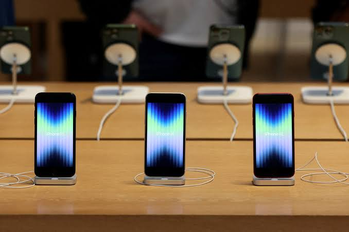

Primeira seção
A Apple encerra pregão avaliada em US$ 5 trilhões pela primeira vez
PA Apple encerrou o pregão desta quarta-feira (14) com alta de 0,5% em suas ações e registrou valor de mercado acima dos US$ 5 trilhões (cerca de R$ 25 trilhões) pela primeira vez em sua história. A empresa já tinha alcançado esse valor durante o pregão, quando chegou a se tornar a marca mais valiosa do mundo por alguns instantes. 🗒️ Tem alguma sugestão de reportagem? Mande para o g1 Naquela ocasião, as ações caíram antes do fechamento e fizeram o valor de mercado da companhia voltar para um patamar abaixo dos US$ 5 trilhões. Com o valor alcançado nesta quarta, a Apple se isolou como a segunda empresa mais valiosa do mundo e a segunda a ter alcançado este valor de mercado no fechamento do pregão.
Estados americanos processam OpenAI e acusam ChatGPT de incentivar automutilação em jovens
Oito estados norte-americanos entraram com ações judiciais contra a OpenAI nesta quarta-feira (14), sob a alegação de que o ChatGPT incentivou usuários, incluindo adolescentes, a machucar a si mesmos ou outras pessoas. Os estados afirmam que o chatbot reforça delírios, estimula comportamentos perigosos e pode ajudar no planejamento de atos violentos, como tiroteios em massa, apurou a Reuter.s Os processos foram apresentados separadamente pelos procuradores-gerais dos estados, autoridades responsáveis por representar os governos estaduais em questões judiciais. Entre os envolvidos estão Iowa, Kansas, Arizona, Arkansas, Idaho, Montana, Nebraska e Virgínia Ocidental. As ações acusam a OpenAI de violar leis estaduais de proteção ao consumidor por, segundo os procuradores, induzir o público a acreditar que o ChatGPT é seguro. Os estados também alegam que a empresa colocou a saúde dos moradores em risco, causando perturbação da ordem pública. Segundo os processos, o chatbot foi projetado para ser agradável e envolvente, com o objetivo de conquistar a confiança dos usuários. Os estados afirmam, porém, que essa característica pode contribuir para reforçar ideias delirantes e facilitar o planejamento de atos violentos.